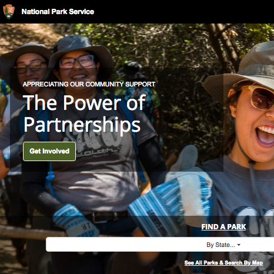
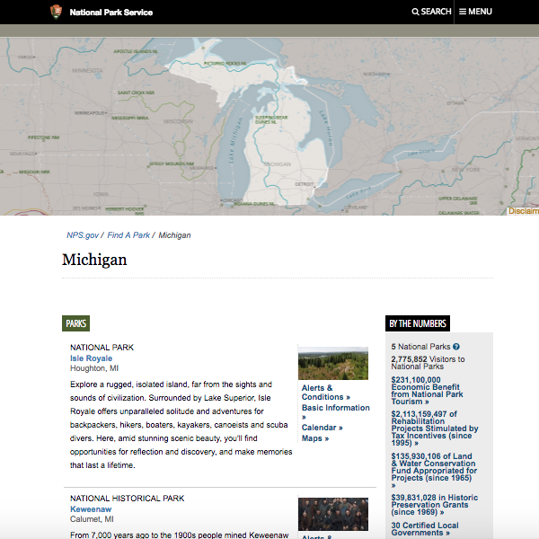
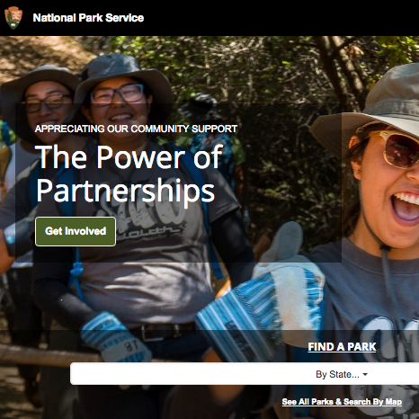
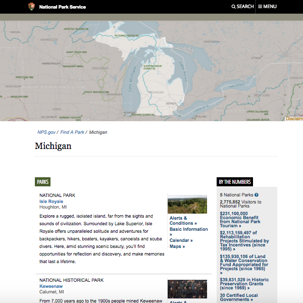

My Role
This was an individual project for my Intensive Python class. It took approximately 1 week to make (not working on it full-time).
Project
Interactive Python program (in Terminal window) in which users can enter any US state abbreviation and see a map of all of the National Sites in that state. They can also choose one site and see a map of places nearby that site. National Site data is scraped from the National Park Service’s website (NPS.gov). National Site data is sent to the Google Places API to get the latitude and longitude coordinates needed for the map. Nearby places are also found via the Google Places API. Maps are generated with Plotly. Caching is implemented throughout.
Code
Available in my Github repository. Includes the following sections: Class definitions Caching functions (manually coded) Scraping functions Functions to call Google Places API Functions for mapping with Plotly Terminal interactions
Screenshots
 


